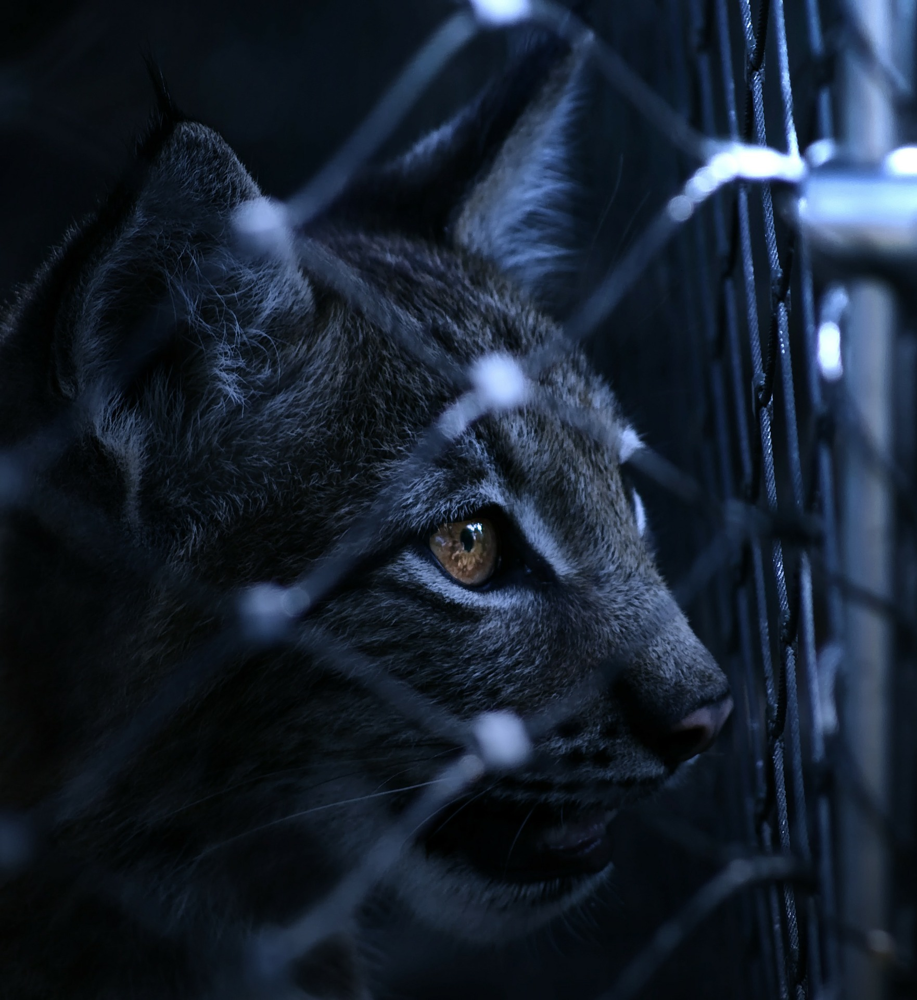

Zwierzęta Chronione Prawnie w Polsce
W ciągu ostatnich 50 lat populacja dzikich zwierząt zmniejszyła się o blisko 60 proc. Tylko wspólnie możemy odwrócić ten proces, chroniąc ginącą przyrodę wokół nas.
Na co dzień człowiek rzadko zastanawia się nad tym, czy przyszłe pokolenia będą mogły zobaczyć na żywo zwierzęta, które teraz żyją obok nas. Tymczasem sytuacja wielu gatunków jest tragiczna. Bez pomocy człowieka, który najczęściej stanowi główne zagrożenie dla zwierząt, ich los jest przesądzony.
Pomóż chronić ginącą przyrodę i zagrożone gatunki. Możesz to robić m.in. wspierając działania WWF. Pomagasz wtedy chronić najcenniejsze obszary przyrodnicze oraz zagrożone gatunki zwierząt, których życie zależy od stanu naszej Planety.